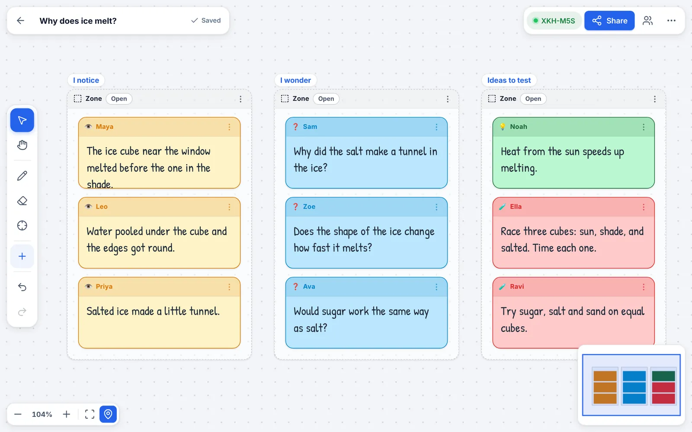
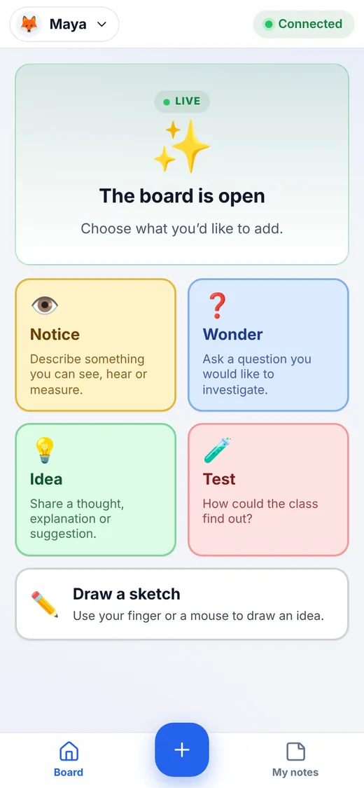
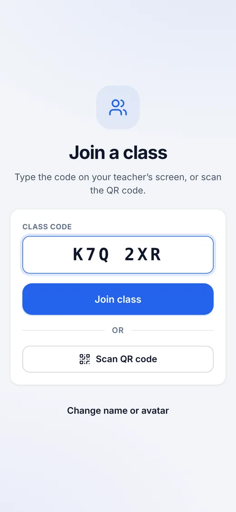
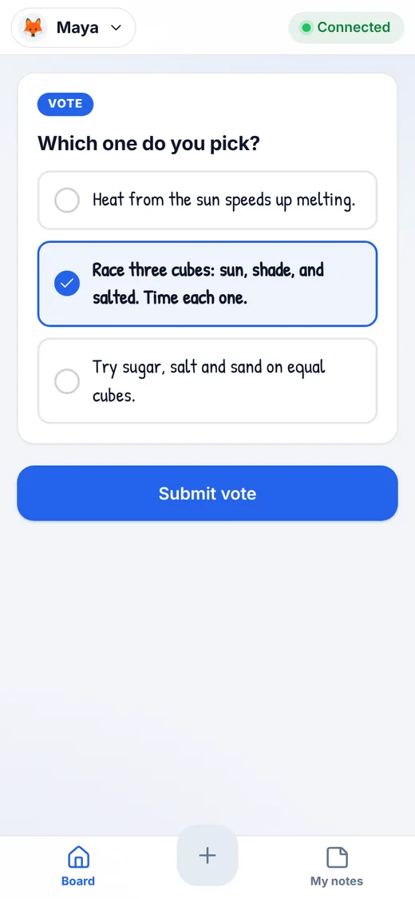

Open a board and share the code
Present your phenomenon, then start a blank board or a routine like See-Think-Wonder. A short code and QR code appear for your class.
Class code
K7Q-2XR
InquiryDQB is a live driving question board for your classroom. Students share what they notice and wonder from any device. Together you sort their questions, decide what to investigate and return to the board as understanding grows.


A driving question board (DQB) collects the questions students raise about a puzzling phenomenon and keeps them in view while the class investigates, explains and asks new questions. InquiryDQB gives each step of that cycle its own tools.
Students record what they see, hear or measure, in words or a quick sketch, before anyone tries to explain it.
Every student adds questions from their own device, so the board reflects the whole class and not just the first hands up.
Cluster questions into themes to find the big ideas, then let the class vote or rank to choose what to investigate first.
Students propose explanations and ways to test them, then send predictions and measurements into live class polls and graphs.
Build arguments from claim, evidence and reasoning, respond to each other’s ideas, and draw one consensus model as a class.
End lessons with an “I learned / I wonder” exit ticket, move answered questions aside and add new ones. Then the cycle starts again.
No rosters, setup or student logins, so the lesson starts with thinking, not logging in.
Present your phenomenon, then start a blank board or a routine like See-Think-Wonder. A short code and QR code appear for your class.
They scan the QR code or type the code on a phone, tablet or Chromebook, pick an avatar and a first name, and start posting what they notice and wonder.

Notes appear on your board as students post them. Cluster them into themes, then let the class vote on which question to investigate first.

A whiteboard-style canvas for your projector and a simple, phone-friendly app for every student.
Each note type opens with a prompt such as “I wonder…” or “We could test this by…” and a short hint, so students know what a good observation or question looks like.
Students who rarely speak up can still be heard. Hide names to lower the stakes, or approve notes before they appear on the board.
Open a discussion on any set of notes and students respond to each other’s thinking with feedback, questions and connections.
Sort students into colour groups and open a zone that only one group can post to, or give a group a breakout board of its own.
Lock or open the board, run a class timer, spin to pick who shares next, pause a student, or invite a co-teacher to help from a second device.
Boards save automatically, so your driving question board can grow lesson by lesson. Export a picture or a printable outline for the classroom wall.
Built-in templates lay out the zones for you, ready to launch a unit, surface prior knowledge or structure a debate.
Students separate what they observe from what they think it means, then ask what they still wonder.
Surface prior knowledge at the start of a unit, then come back at the end to record what the class learned.
Build a deep understanding of a key term by defining it, listing its characteristics and sorting examples from non-examples.
Compare two ideas, organisms, texts or systems and find what they have in common.
Students take a position on a claim, back it up with evidence and listen to the other side.
Weigh up a new idea or proposal from four directions before the class decides where it stands.
Have a layout you use every unit? Select it and choose Save as template from the ⋯ menu to reuse it on any board.
No accounts, rosters or installs for you or your students.
A laptop, Chromebook or tablet with a current Chrome, Edge, Safari or Firefox. Keep the board tab open during the lesson.
Any phone, tablet or computer with a modern browser. Students scan the QR code or type the class code to join.
Everyone needs internet access, and peer-to-peer (WebRTC) traffic can’t be blocked by the school filter. Most networks are fine.
Notes travel straight from students’ devices to yours, and boards are saved in your browser rather than a cloud account.
Bring your next phenomenon to the board. It’s free, and your class can join from any device.
Start a board